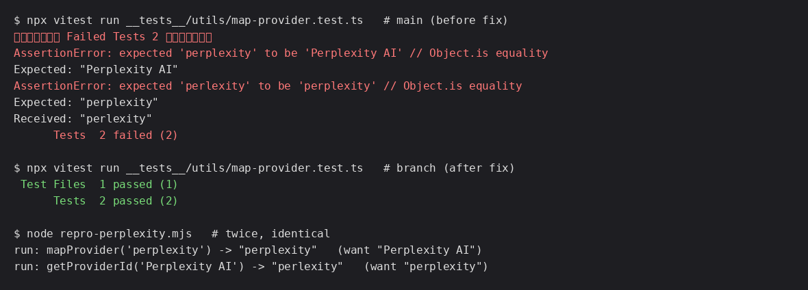

perlexity keyThe backend addresses providers by their litellm id (perplexity). The map key perlexity
never matches, so mapProvider("perplexity") falls through to the raw id and
getProviderId("Perplexity AI") round-trips the misspelling back to the settings API.
